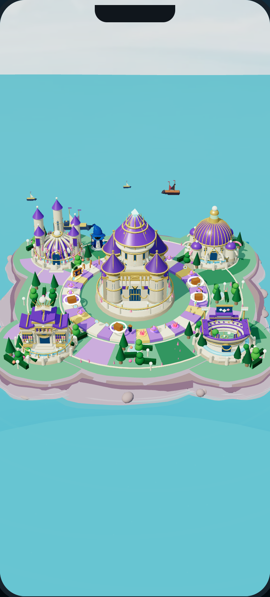
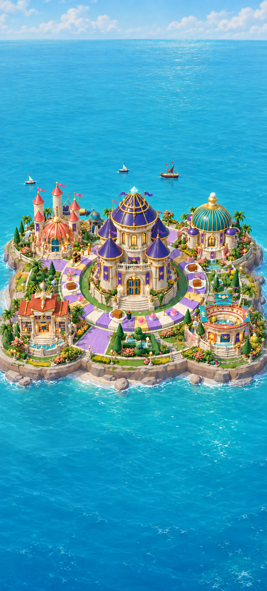
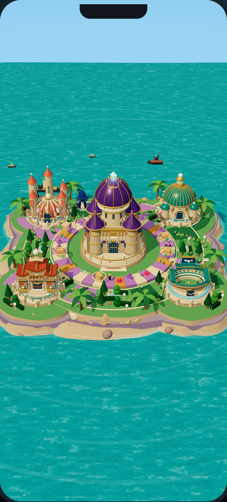

Island Run / 004 / Local implementation evidence
Same island.
A more colorful V2.
The familiar five-building island, upgraded in real Three.js. Purple remains the citadel’s identity; coral, teal and terracotta distinguish its neighboring landmarks.

Before · actual runtimeSource-stable baseline-v007. Not an illustration.

Selected visual goal · conceptImageGen reference selected by the user. This is not gameplay footage.

V2 · actual WebGLCurrent local implementation. Visual approval is recorded separately.
Five familiar landmarks
Eight explicit azimuths
Corrected camera evidence. These views expose remaining shoreline, rear-water and environment defects; they are not visual approval.
Building levels & construction
Actual construction presentation, including individual interiors, late roof authoring and the removable archive facade. Checkpoint captures are not a full construction video.
Raise the Broken Causeway
Six Masonry Sparks · three spans · two Sparks per span. This remains separate from the Event Arena minigame launcher. The restored promenade sits outside the canonical 36-tile route.